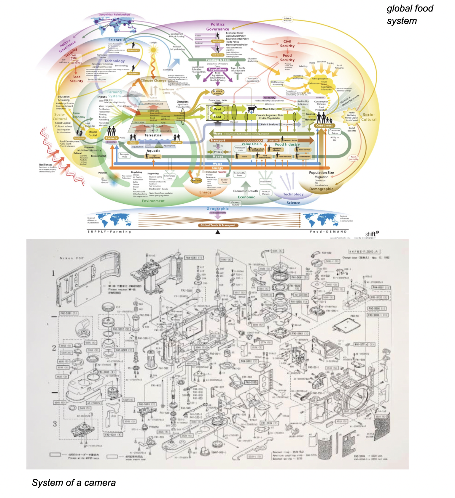
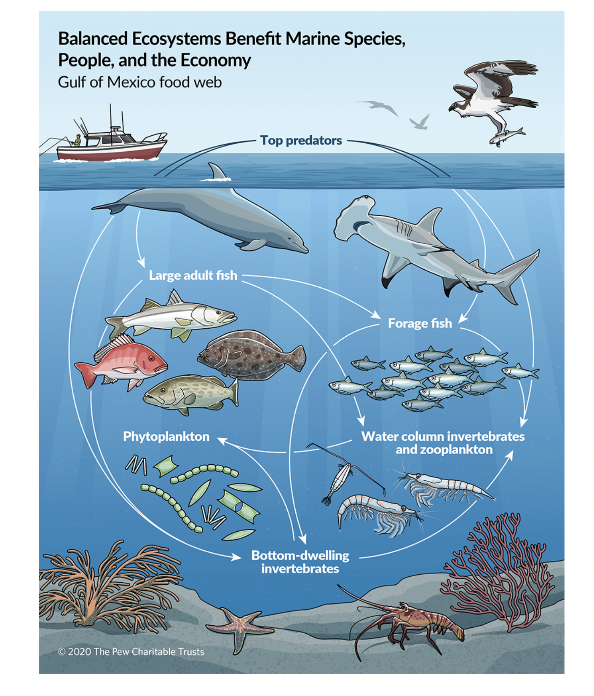
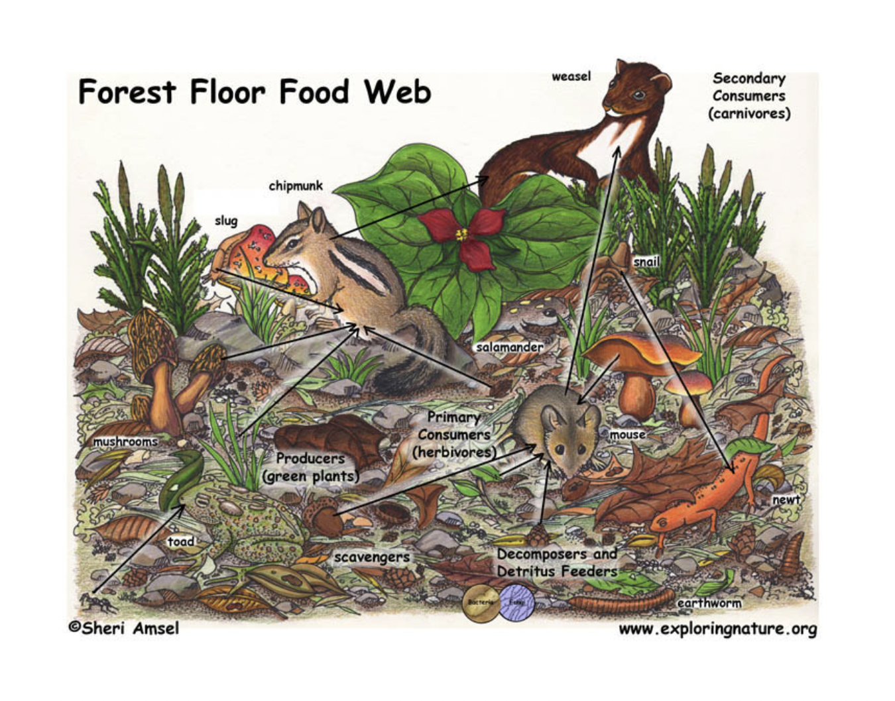
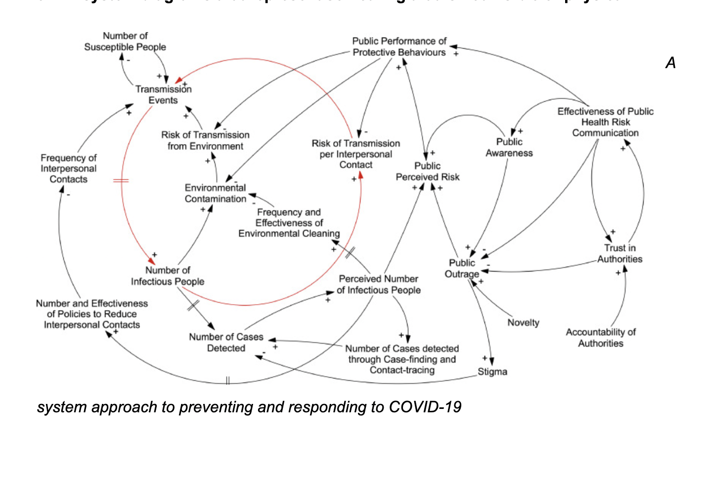
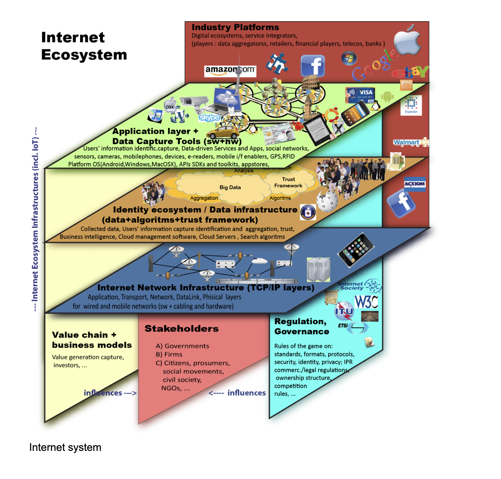
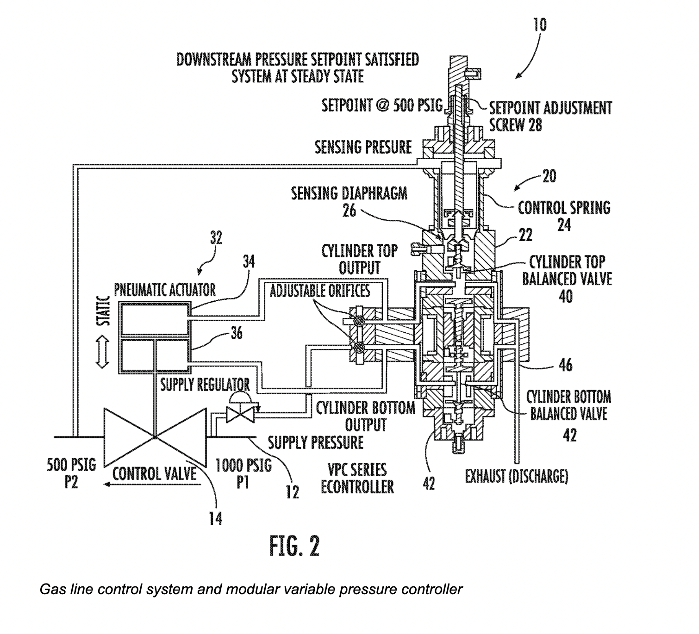
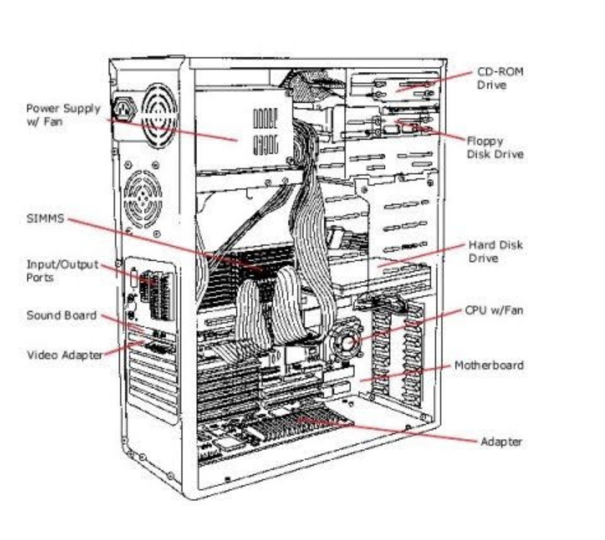

Answer these questions:
Q1. -- What is a good working definition of what a System is and perhaps what it is not?
Q2. -- For the 4 system definations you were to look up please give in your own words what they mean and give an example of them for each case.
Q3 -- Give us your defination of what Tesslation means and give an example you encountered, not mentioned in the reading.
Q4 -- What is The difference between ideas of Modularity and Tesselation? What are the properties that are in oppostion with each other?
Q5 -- What is the difference between designing something that has Complexity (aperiodic) vs being Uniform (periodic)
Q6: 1. -- Bring in 2 system diagrams that have more than 100 elements

2. -- Bring in 2 system diagrams that is something considered living


3. -- Bring in 2 system diagrams that represent something that is not visible or physical


4. -- Bring in 2 system diagrams that represent a system that incorperates modularity


4 concepts
Modularity, Decomposibilty, Emergence and Chaos Theory.
Chaos Theory: The food webs show the relationships among species. It is a good example of Chaos theory because it deals with nonlinear things that are effectively impossible to predict or control but still behave within larger systems that maintain balance. One change in the system can lead to a larger unbalanced system. For example, if the bottom-dwelling invertebrates disappear, there’d be no supply for the upper class creatures and the top predators wouldn’t have food as well and the ecosystem would be affected
Emergence: The internet ecosystem is broken down into different elements. We have industry platforms, network infrastructures, etc. One NGO can not make a whole internet. Everything works together in a complex adaptive internet system.
Decomposability: The sensory system is broken down into different parts until it can not break down any further. For example, a screw in the camera is the smallest thing that can be broken down into and can’t be taken apart anymore
Modularity: The sensory system is broken down into different parts until it can not break down any further. For example, a screw in the camera is the smallest thing that can be broken down into and can’t be taken apart anymore.
{kind=link}
{kind=link}
{kind=link}
{kind=link}
{kind=link}
{kind=link}
{kind=link}
{kind=link}
{kind=link}
{kind=link}
{kind=link}
{kind=link}